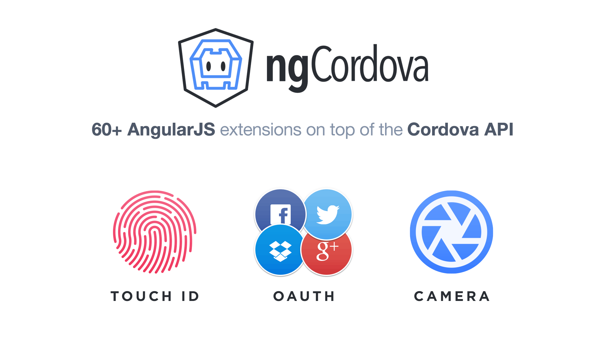

Superpowers
for Mobile App Development
Adam Bradley
Lead Ionic Developer
- Madison, WI, USA
- @adamdbradley
- adamdbradley
Hybrid Apps!
HTML5 that acts like native
Web wrapped in native layer
Direct access to native APIs
Familiar web dev environment
A single code base (web platform!)
“But...hybrid apps are slow!
The Times They Are a-Changin'
| Year | Device | Processor | RAM |
|---|---|---|---|
| 2007 | iPhone | 620 MHz | 128 MB |
| 2010 | iPhone 4 | 1 GHz | 512 MB |
| 2015 | iPhone 6 | 1.4 GHz dual-core | 1 GB |
Web-standards
Have improved!
caniuse.com is lookin' pretty good nowadays
Android is now Chromium-based
iOS users keep their devices up-to-date


https://mixpanel.com/trends/#report/ios_8/from_date:-141,report_unit:day,to_date:0

https://mixpanel.com/trends/#report/android_os_adoption
Native SDKs...
Are Great!
Common UI, APIs, views, transitions, gestures, interactions, navigation, stack history, etc.


There's No
Web SDK!
We need to bridge the gap between web & native
We need rich, native-style UI components & interactions
We need UI APIs, not just jQuery widgets
We need to build large-scale apps
Web Technologies You Already
Know & Love


(You'll feel right at home)
Standing on the Shoulders
of AngularJS
Extends the HTML vocabulary
Proven for large-scale app development
UI Components using Directives & Services
Native Focused
Modeled off of native SDKs
Built to work well with Cordova
UI on desktop & mobile are different
Sass!
CSS generated from the Sass preprocessor
Quickly give your app its own look and feel
CSS designed to be easily overridden
Variables based with default settings
Focus on building your app, not on how an app should work.
How does it all come together?
- Your App
- Ionic
- AngularJS
- WebView (Cordova)
- Native App
Collection Repeat
- Similar to Angular's ng-repeat
- Inspired by iOS’s UICollectionView
- Scroll through thousands of items
- Only renders the viewable items
- Smooth scrolling!
{{ c.name }}
{{ c.email }}
Navigation
- Uses AngularUI Router
- Multi-history stack
- Shows back button when possible
- Transitions follow direction of nav
- Works with Android's back button

Cached Views
- View elements left in the DOM
- $scope disconnected when cached
- State maintained
- Scroll positions maintained
- Life Cycle events
- Highly configurable
Swipe To Go Back
- Swipe back to previous view
- Interactive transition
- WebView (Cordova) only
Tabs
- Nested views
- Each tab has its own nav history
- Abstract states in AngularUI Router
Side Menu
Left Menu
...
Other Components
- Actionsheet
- Modal
- Pull To Refresh
- Popup
- Popover
- Slidebox
- Loading Overlay
- Infinite Scroll
- Inputs
- etc.
Ionicons

700+ MIT licensed font-icons included
Spinners
- Animated SVGs
- More than just rotating icons
- Defaults to platform's spinner
- Style with CSS
Ionic Showcase

MIT LICENSED
Free to use (even commercially)
...but there's more to Ionic

- Quickly create a project with starter templates
- Boilerplate app structure ready for customization
- Preconfigured tools: Gulp, Sass, Bower, etc.
- Start a local dev server with LiveReload
- Generate icon/splashscreen resources
- Build and run native apps
Demo Time!
May the demo gods be with us
Modern Chromium WebViews
- Use modern Chromium builds for Android WebViews
- Android 4.0+
- Same hardware, modern software
- Amazing performance improvements
- Proof hyrid apps have a great future
Ionic.io
- Push Notifications
- Analytics
- A/B Testing
- Live Update
- Marketplace
Ionic View App

ngCordova
Ionic Creator

COMMUNITY POWERED
Active developer forum, IRC and GitHub repo
Ionic's Adoption
- 13,000+ Github Stars
- Top 50 most starred Github repos
- Consistently Top 10 trending JS Github repos
- Ionic CLI 70,000 downloads/month
- 400,000+ Ionic apps have been started from our CLI
- Released Alpha: November 2013
- Released Beta: March 2014
- Release Candidate(s): Now
What's Next!
- Release v1.0
- Component Modularity
- Customized Animations
- Webworkers and Multi-threading
- Add more Ionic.io services
- ...and much more to come ;)